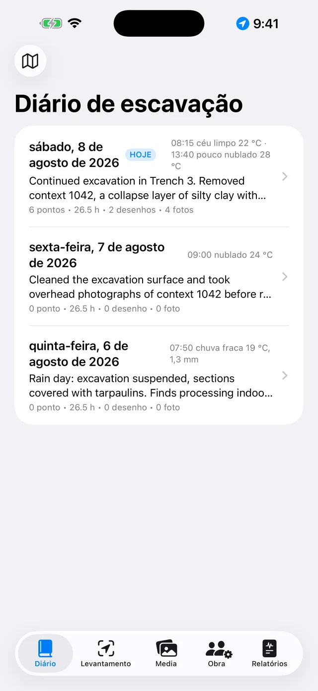
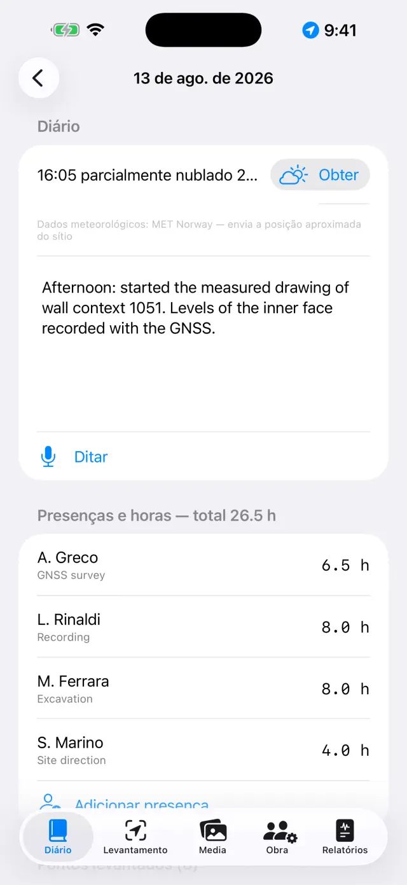
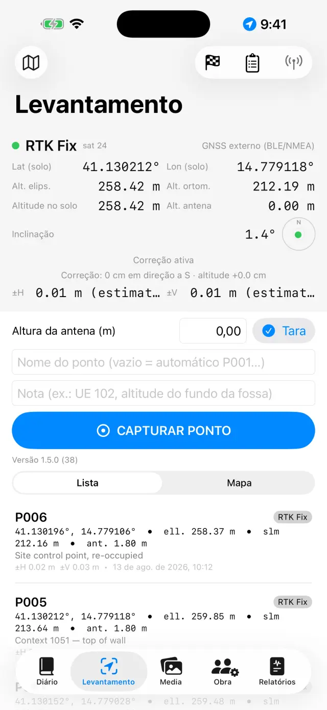
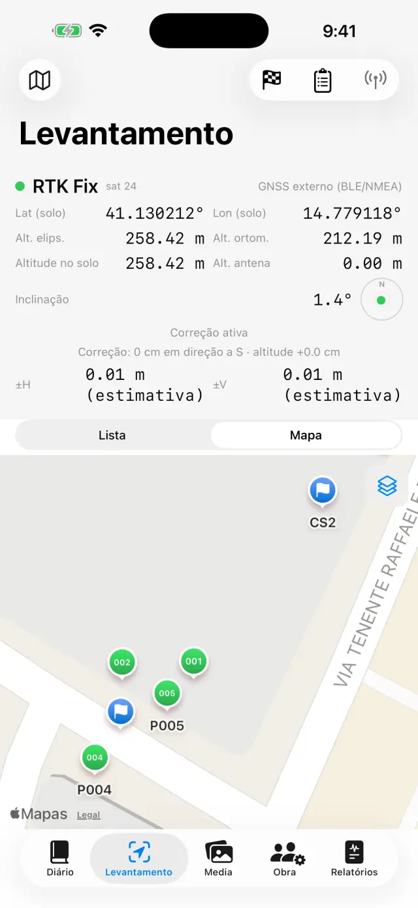
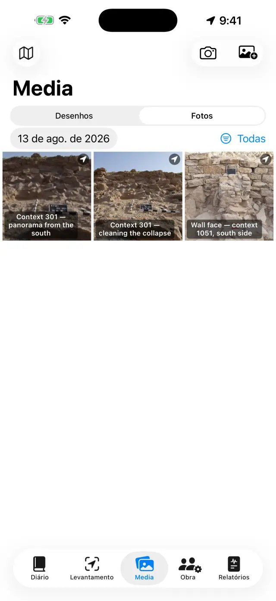
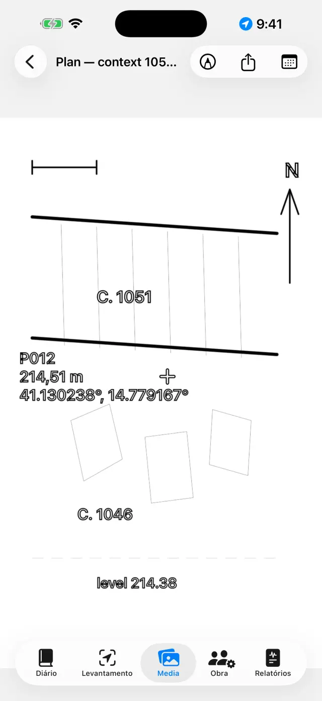
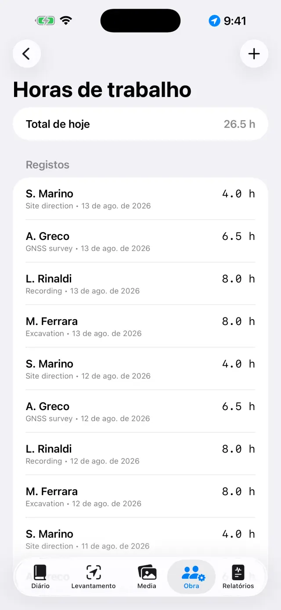
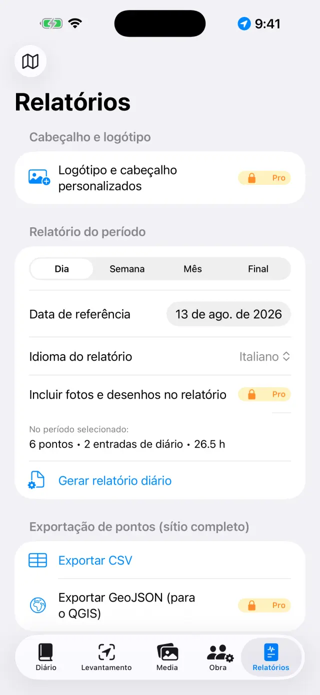

O diário de escavação digital para iPhone e iPad. 100% offline: os seus dados permanecem no dispositivo.
Em poucas palavras
Há uma única ideia por trás de tudo: cada dia de escavação é uma
página que se preenche sozinha. Regista-se cada coisa onde acontece —
um ponto GNSS no Levantamento, uma foto nos Media, as horas na Obra — e a
página do dia no Diário reúne tudo automaticamente. No final da
semana ou da escavação, os relatórios geram-se sozinhos a partir das páginas.
Um dia típico
ManhãAbra a página do dia, anote o tempo e o diário (ou diga-o com Ditar)
EquipaNa Obra, registe quem está presente e as respetivas horas
LevantamentoCapture pontos GNSS; verifique um marco geodésico primeiro se usar RTK
FotosFotografe a partir dos Media: as coordenadas anexam-se sozinhas
DesenhosDecalque o corte ou a planta sobre uma foto (papel vegetal digital)
TardeNo separador Relatórios, gere o relatório diário: um PDF pronto a enviar
Primeiros passos
No primeiro arranque, encontrará já um sítio de exemplo. Para criar um
seu, toque no nome do sítio no topo (ícone 🗺) →
Novo sítio… e dê-lhe um nome (por ex., «Colle Sant'Angelo — Sondagem 3»).
O nome do sítio ativo está sempre visível no topo: todos os separadores
mostram os dados desse sítio. Para mudar de sítio, toque novamente no nome.
Conceda as permissões quando forem pedidas: localização (para os
pontos), câmara (para as fotos), microfone (para o ditado),
Bluetooth (apenas se usar um recetor externo).
Os cinco separadores
📓 Diário
Toque num dia para abrir a sua página: diário, tempo, equipa, pontos,
fotos e desenhos desse dia já lá estão.
Escreva o diário ou toque em Ditar e fale: a transcrição é
feita no dispositivo e funciona mesmo sem rede.
O tempo escreve-se à mão (por ex., «Céu limpo, 28 °C, vento fraco») ou
obtém-se com Obter, que pede as condições do momento ao serviço
meteorológico norueguês. É necessária rede e só funciona no dia de hoje: o
tempo de ontem já não pode ser recuperado. Um segundo toque à tarde acrescenta
uma nova medição. O que escrever à mão prevalece sempre.
Ao obter, só a posição da zona arredondada a cerca de 11 metros sai do
dispositivo, e nos relatórios a linha aparece no idioma do relatório.

A lista dos dias

A página de um dia
📍 Levantamento
O painel no topo mostra a posição em tempo real: coordenadas, altitudes,
precisão e tipo de fix (GPS / RTK Float / RTK Fix).
Se usar um bastão, defina a Altura da antena (m): a altitude do
ponto é reduzida ao solo automaticamente.
Toque em Capturar ponto. O nome é progressivo (P001, P002…),
mas pode introduzir um à sua escolha (por ex., «UE 102 — fundo da fossa») e
acrescentar uma nota.
Alterne entre Lista e Mapa para ver os pontos no
terreno; a partir do mapa pode ativar o cadastro ou outro serviço WMS.
Os marcos geodésicos (🏁) vivem na sua própria secção: importe-os de CSV
ou crie-os, depois use a verificação para acompanhar os desvios ΔN/ΔE/ΔZ em
tempo real antes de levantar.

O painel GNSS do Levantamento

Pontos e marcos geodésicos no mapa
Cada ponto guarda as duas altitudes:
elipsoidal e ortométrica (alt. ortom.). Com o GPS interno do telemóvel, a
altitude ortométrica pode não estar disponível: é necessário um recetor
externo (ver abaixo).
📷 Media
Fotografe com o botão da câmara ou importe da biblioteca de fotos.
As fotos recebem um nome progressivo (F001, F002…) e são georreferenciadas
com a última posição GNSS disponível.
Toque numa foto para lhe dar título e notas (por ex., «UE 102 vista do norte»).

A galeria de fotos
✏️ Desenhos (em Media)
Crie uma nova prancha e escolha uma foto do sítio como fundo: é o seu
papel vegetal digital.
Decalque estratos, cortes e pedras com o dedo ou com a Apple Pencil;
ajuste a opacidade da foto para ver melhor o traço.
Acrescente caixas de texto para as etiquetas (por ex., «UE 1002») e a
seta do norte.
Quando terminar, oculte a foto: fica o desenho limpo, pronto para o relatório.

O papel vegetal digital
👷 Obra
Registe as presenças do dia: nome, função e horas de cada pessoa.
Mantenha o inventário dos equipamentos e a quem estão atribuídos.

Presenças e horas
📄 Relatórios
Escolha o tipo: diário (gratuito, com marca de água),
semanal, mensal ou final
com apêndices completos PRO.
Escolha o idioma do relatório entre catorze, independente
do idioma da aplicação: o relatório pode sair em espanhol mesmo que utilize a
aplicação em português.
Gere o PDF, ou exporte em DOCX com logótipo e fotos
PRO, CSV dos pontos, GeoJSON para o QGIS
PRO.

Geração de relatórios
Recetor GNSS externo e NTRIP
Com um recetor externo (antena centimétrica), a aplicação atinge a
precisão RTK. O GPS interno permanece sempre disponível como alternativa.
Ligue o recetor e ative o Bluetooth do telemóvel.
No Levantamento, escolha a origem da posição: GNSS externo
(BLE/NMEA)PRO e selecione o seu recetor na
lista. Os recetores MFi (gratuitos) e os que transmitem NMEA em rede também
são suportados.
Para as correções RTK, configure o NTRIP: endereço do
caster, porta, mountpoint, utilizador e palavra-passe (ficam guardados no
chaveiro do dispositivo). A aplicação envia a sua posição ao caster e recebe
as correções.
Aguarde a passagem a RTK Fix: precisão centimétrica.
Verifique num marco geodésico antes de começar.
Cópia de segurança e intercâmbio
No menu do sítio, toque em Exportar sítio (.zip): lá dentro
está tudo — diário, pontos, fotos, desenhos, horas, marcos geodésicos.
Guarde o ZIP onde quiser (Ficheiros, Drive, e-mail…). É a sua cópia de
segurança: a aplicação não tem nuvem, por opção de conceção.
Importar sítio (.zip)… recria o sítio noutro dispositivo,
mesmo entre iPhone e Android.
⚠️ Eliminar sítio… apaga o sítio com todo o seu
conteúdo e é irreversível: exporte primeiro um ZIP em caso de dúvida.
Gratuito e Pro
Gratuito
Pro
Sítios
1
Ilimitados
GNSS
GPS interno, recetores MFi
+ BLE/NMEA, NTRIP
Relatórios
Diário com marca de água
Todos, sem marca de água
Exportação
PDF, CSV
+ DOCX com logótipo e fotos, GeoJSON
Ditado por voz
✓
✓
Idiomas dos relatórios
14
14
Pro é uma subscrição mensal ou anual com renovação automática, ou uma
compra única vitalícia. Gere-se e cancela-se nas definições do seu ID Apple.
Resolução de problemas
O recetor Bluetooth não aparece ou não liga
Verifique, por ordem:
o recetor está ligado e ainda não está associado a outra aplicação ou telemóvel;
o Bluetooth do sistema está ativo e a aplicação tem a permissão de
Bluetooth (Definições → Giornale di Scavo);
a origem escolhida no Levantamento é GNSS externo (BLE/NMEA);
desligue e volte a ligar o recetor e procure de novo.
Nunca chego ao RTK Fix
É necessária uma ligação NTRIP ativa: verifique o caster, o mountpoint e as credenciais.
Verifique a cobertura de dados do telemóvel: as correções viajam pela internet.
O céu aberto conta: árvores densas e paredes próximas degradam o sinal.
Com cobertura fraca, pode ficar em RTK Float (decimétrico).
Escolha um mountpoint próximo (< 30–40 km) ou uma rede VRS.
O NTRIP não liga
Verifique o endereço e a porta (geralmente 2101) e que o mountpoint
existe: muitos casters publicam a lista (sourcetable).
Um utilizador ou palavra-passe incorretos dão erro 401/403: reveja as credenciais.
Algumas redes exigem o envio da posição (GGA): a aplicação fá-lo sozinha,
mas o recetor precisa de já ter um fix.
A altitude ortométrica está vazia ou a zero
O GPS interno dos telemóveis fornece apenas a altitude elipsoidal. A
altitude ortométrica (alt. ortom.) vem da frase GGA de um recetor externo.
Sem recetor, os pontos guardam mesmo assim a elipsoidal.
O ditado não funciona
Verifique a permissão de microfone e de reconhecimento de voz nas Definições.
A transcrição é feita no dispositivo: da primeira vez, o sistema pode ter
de descarregar o modelo do idioma (é necessária rede uma vez, depois funciona offline).
Fale em frases curtas; o texto é inserido no final do diário.
O mapa cadastral (WMS) não aparece
A aplicação é offline, mas as camadas WMS são serviços web: precisam de
uma ligação e de um serviço ativo. O cadastro italiano vem pré-configurado;
para outros países, introduza o endpoint WMS do serviço nacional (tem de
suportar EPSG:3857). Fora de cobertura de dados, o mapa base e os pontos
permanecem visíveis.
As fotos não têm coordenadas
A foto assume a posição do último fix GNSS: abra primeiro o Levantamento e
aguarde que a posição seja obtida, depois fotografe. Com a permissão de
localização negada, as fotos são guardadas sem coordenadas.
Faltam fotos ou o logótipo no relatório
As fotos nos relatórios, o logótipo e o cabeçalho personalizado fazem
parte do Pro e aplicam-se ao DOCX e ao PDF. O relatório diário gratuito tem
marca de água e não inclui fotos.
Eliminei um sítio por engano
A eliminação é definitiva: os dados não são recuperáveis (não existe
nuvem). Se exportou um ZIP anteriormente, importe-o para restaurar o sítio a
essa data. Sugestão: exporte um ZIP no final de cada dia.
Comprei o Pro mas continua bloqueado
Toque em Restaurar compras no ecrã Pro, com o mesmo ID Apple da
compra. Se mudou de dispositivo, a restauração recupera a subscrição ou a
licença vitalícia.
«Obter» está desativado, ou indica «Tempo indisponível»
se o botão estiver desativado, está na página de um dia passado: o tempo
só se obtém no dia de hoje;
se aparecer «Tempo indisponível», falta rede, ou o sítio ainda não tem um
ponto GNSS de onde obter a posição — registe um ponto e tente novamente.